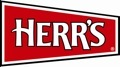

Green Valley North Turkey Trot
We invite our friends and neighbors to join us for the 33rd Annual Green Valley North Turkey Trot to benefit the Lenny "Batman" Robinson Hope for Henry at Sinai Lifebridge.
This annual community fundraising event is under new management for 2016 and kicks off Thanksgiving Morning, Thursday, November 24th at 8am. Join us for a 5-mile run and 1-mile family walk followed by post-trot festivities. 100% of all donations are completely tax deductible and go directly into the hands of our beneficiaries.
Hope for Henry is reinventing how hospitals care for seriously ill children and their families through innovative programs that entertain, reduce stress and empower children to be active participants in their own care.
How to Register
In-Person Pre-Registration Night & Canned Food Drive
Beat the lines On Thanksgiving Morning by attending Pre-Registration Night on November 23, 2016. Bring this form, donation (check, cash, charge, or Paypal), and a canned food donation to Chestnut Ridge VolunteerFire Company 12020 Greenspring Avenue, Owings Mills, MD 21117
In-Person on Thanksgiving Morning
Bring this form, donation (check, cash, or charge), plus canned food donation to the registration tent.
Online or In-Person with PayPal
Pay via PayPal or securely swipe your card at either in-person registration.
All Registrants may pickup their turkey trot shirt at pre-registration night or at the registration tent on race morning. Availability and size requests while supplies last.
Contact Us
For additional event information please call 410.252.9734 or email us atß turkeytrot@crvfc.org
Sponsors

- 